Step 1: Start with a square piece of origami paper.
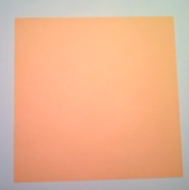Step 2: Fold the upper left corner to the bottom right corner, then unfold.
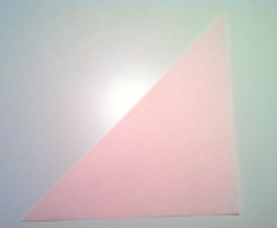Step 3: Fold upper right corner to the bottom left corner, then unfold.
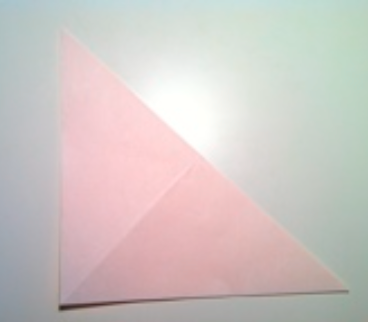Step 4: Fold the top half back at the middle, then unfold.
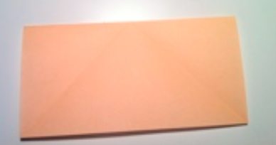Step 5: With a finger, push down on the center of the paper to pop it in.
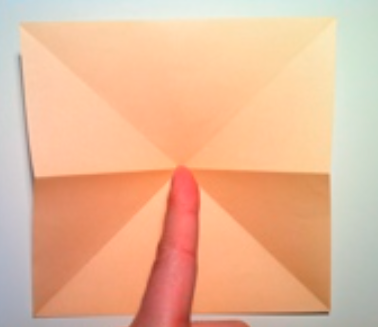Step 6: Bring the creases of the left and right sides together and a triangle should form.
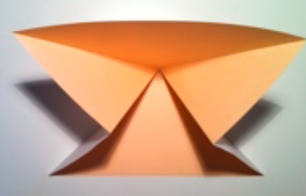Step 7: Fold the left and right corners of the upper layer to the top corner.
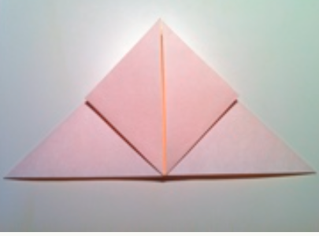Step 8: Fold the newly created corners to the center.
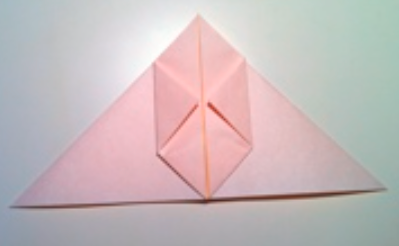Step 9: Fold the top tips of both flaps down as shown to create two small triangles.
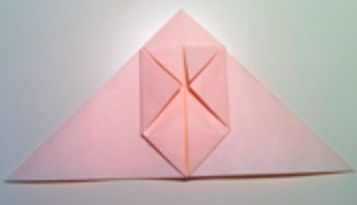Step 10: Fold both triangles diagonally down to the sides.
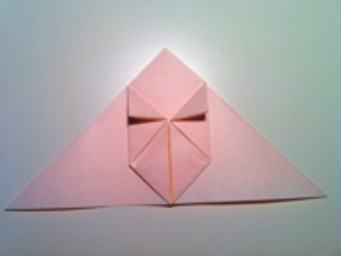Step 11: Open the left flap like a pocket and tuck the triangle in as shown, then place the flap back to its original position.
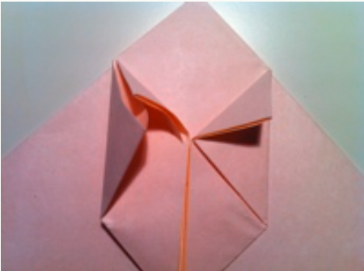Step 12: Repeat on the right side. Tuck the right triangle into the right flap.
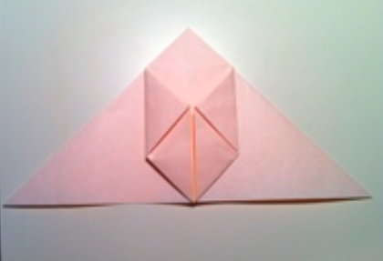Step 13: Turn the figure over.
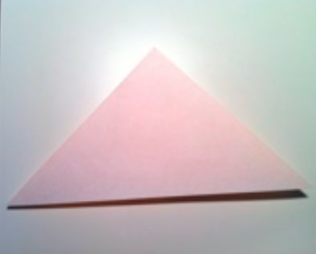Step 14: Fold the left and right corners to the top corner.
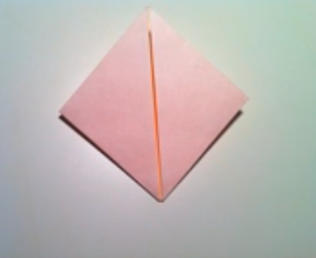Step 15: Fold the right flap to the left.
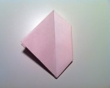Step 16: Fold the corner of that flap to the center.
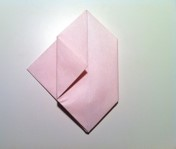Step 17: Fold the flap back to the right side.
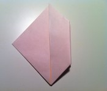Step 18: Fold the left flap to the right.
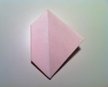Step 19: Fold the corner of that flap to the center.
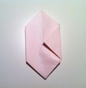Step 20: Fold the flap back to the left side.
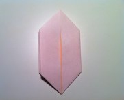Step 21: Take both flaps from the center and fold to the side diagonally as shown.
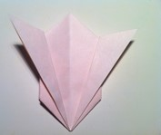Step 22: Open the flaps to create bunny ears.
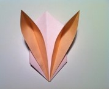Step 23: With the ears open, fold the lower portion back, then unfold as shown.
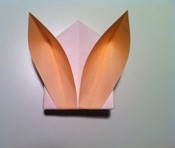Step 24: At the bottom of the figure is a little hole where you'll have to blow into. To make it easier, pull the top and bottom layers apart as shown in the second picture and blow into it. You may need a couple of adjustments to get right.
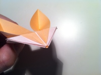Step 25: Now you have a cute little bunny.